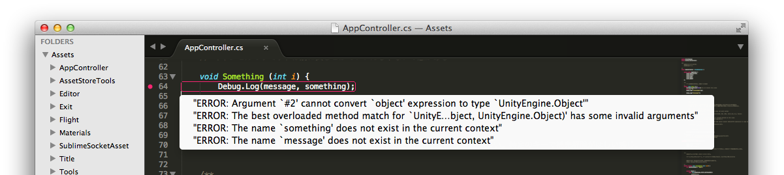

SSA 1.7.x is out! そのうちAtomにも対応するつもり。
概要
SublimeSocketAsset
http://u3d.as/content/sassembla/sublime-socket-asset/4SP
の、最新版 1.7系がついにリリースできた。
合わせて、SublimeTextのプラグインである
SublimeSocketのversionもST2, ST3版ともに1.4に上がった。
変更内容としては、どっちかというとSublimeSocketのエディタAPI機能強化と、
内部で使っていたプログラマブルな設定ファイルのDSL化、DSLとしてのパージがメインだった。
パージする過程でキバッたメンバーの手によりテストランナーが誕生するとかしてた。
DSL + テストランナーの仕様と処理系を切り出す事に成功したが、それはこちら。
SushiJSON
http://sassembla.github.io/Public/2014:02:22%2021-48-23/2014:02:22%2021-48-23.html
結果として、ST2、ST3に、動的にプログラマブルな形で新機能を実装できた。
・ログヒストリー機能の追加
・エラー表示の内部化
・quickfixの追加
・プログラマブル
・テスタブル
Unityの実行時ログのヒストリー表示機能が付いた
同じ箇所のログをヒストリーとして纏めて表示することができるので、
値の変化とかを超追いやすくなった。
ツールチップUIの有無で表示方法が変化する。
on ST3
on ST2
ツールチップが無いから別ビューで出すようにした。
いやーーーーマジ便利っすわァーーーー
値が増えてるか減ってるか、
ココを通ったときのパラメータがどうなってるか、がコードに出せる！
エラー表示の内部化
こちらもツールチップの利用。
ST2版は別ビューででる。
複数のエラーがある場合は複数の項目が縦に並ぶ。

見やすさ。
なんという見やすさよ。
これがプログラマブルにフィルタとしてセットできるんだぜヒャッホウ。
quickfixの追加
おまけ程度だけど、quickfix可能であれば、該当するエラーのツールチップを押すと
quickfixが出て、修正が走る。
プログラマブル
これらの機構は、全部SushiJSONの組み合わせで書かれている。
マッチさせたいエラーの定義も、マッチ後どんなAPIをぶったたいてどんな値を使いたいかも、
JSONみたいな書き方で動かせる。

例えば、
・エラーが出たらエディタの特定行を光らせる
・探知時のパラメータを使ってshellを走らせる
とかができる。
一番の用途は、
・エディタへのユーザーのアクション or その後のコンパイラのリアクションを元に何かする
というところ。
もちろん、保存したらコンパイル、なんかもここで実現している。
結果としてタスクランナーみたいなのも可能だけど、ちゃんと特化した奴を使うのが良いとおもう。
ドキュメントはSublimeSocketに追加中。 API名と出力パラメータをリスト化すればDone。
テスタブル
テストできる項目の都合で、ほぼST3専用だが、
ST3にSublimeSocket 1.4.0 を入れた状態で、
sublimesocket test
で、テストが走る。
ツールチップとかめっちゃでる。
これ。

Atomに向けて
SushiJSONは実行系がわりと小さく書けるので、Atomでも動かす事が出来ると思う。
魅力的なツールチップとかが出て来たら対応する。